DEMOTAYLORMODEL Short demonstration of the Taylor model toolbox
This toolbox is a MATLAB/INTLAB-implementation of the Taylor model approach for solving ODEs with mathematically rigorous results. For details on that approach we refer to the references at the end. The main function is the ODE solver verifyode.
In principle, Taylor models are, like intervals, objects on their own which may serve for various other kinds of verified computations. We emphasize that this toolbox is not designed for such general applications of Taylor models. It is deliberately focused on ODEs.
The routine verifyode creates all Taylor models automatically, basically hidden from a user. In principle, the user does not even need to know what Taylor models are. Nevertheless, the first two sections give some brief technical insight into their definition and arithmetic. Users who are not interested in that may directly proceed to Section "verifyode - Syntax".
Contents
Definition of Taylor models
The simplest way is to think of a Taylor model as a multivariate, real polynomial p of bounded degree d in a fixed number of n variables. Such a polynomial is usually written as
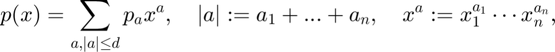
As an example let us consider the square B := [-r,r] x [-r,r] with r := 0.1, which shall be mapped iteratively by the function
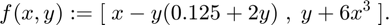
The following program executes four such iterations with
- interval arithmetic (blue plot)
- affine arithmetic (green plot)
- Taylor model arithmetic (black plot)
For each iteration the curved red line shows the approximate true boundary of the transformed box B, i.e., the boundary of the sets f(B),f(f(B)), f(f(f(B))), and f(f(f(f(B)))), respectively. where a = (a_1,...,a_n) is a multi index consisting of non negative integer exponents a_i and the polynomial coefficients p_a are real numbers. Now, an n-dimensional domain
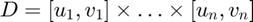
is fixed which is simply an interval vector of length n with interval components [u_i,v_i], i = 1,...,n. Next, a "center point" c = (c_1,...,c_n) in D is fixed which must not necessarily be the exact center (u+v)/2. For example, c := u or c := v are also allowed, only c_i must be in [u_i,v_i]. The standard domain and center point are
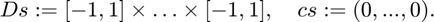
The centered image
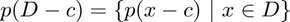
is the enclosure represented by the data p, D, and c. For the special case of degree d = 1, standard domain Ds, and center point cs this coincides with the enclosure represented by an object in affine arithmetic with n error terms.
Moreover, a Taylor model contains an error interval E which absorbs inevitable rounding and degree truncation errors. Thus, the enclosure (range) represented by the Taylor model data p, D, c, E enlarges to
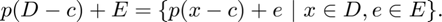
We remark that the polynomial coefficients p_a, the domain bounds u_i, v_i, and the center points c_i are restricted to be floating-point numbers in order to keep them representable on a computer.
For the single Taylor model y := (p,D,c,E) the range is a closed interval. In particular, it is convex. Taking a second Taylor model z := (q,D,c,F) with same domain and center point, the range R of the Taylor model vector w := (y,z) is defined by
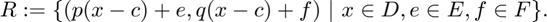
This set R is not necessarily convex anymore. This is the big advantage of Taylor models: they allow to enclose higher dimensional shapes with curved boundaries without too much overestimation, see the pictures in Section "Taylor model arithmetic".
As a first simple example, a Taylor model y with polynomial part
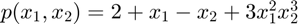
of degree d = 5, standard domain, standard center point, and error interval [-1E-6,1E-6] can be created as follows:
p = [2;1;-1;3]; % polynomial coefficients M = [0 0; % polynomial exponents 1 0; 0 1; 2 3]; order = 7; % some degree bound >= d D.inf = [-1;-1]; % lower domain bounds D.sup = [1;1]; % upper domain bounds c = [0;0]; % center point E.inf = -1E-6; E.sup = 1E-6; format shortg y = taylormodelinit(c,D,order,M,p,E) return
taylormodel y =
dim order type iv_mid iv_rad im_inf im_sup
___ _____ ____ ______ ______ ______ ______
2 7 0 0 1e-06 -3 7
min max center
___ ___ ______
x1 -1 1 0
x2 -1 1 0
x1 x2 coeff
__ __ _____
0 0 2
1 0 1
0 1 -1
2 3 3
A quite large enclosure [im_inf,im_sup] = [-3,7] of the polynomial image p(D-c) = p(D) = [-3,5] is computed automatically. The true range R := [-3,5] + E of y is very much overestimated by [-3,7] + E. In practice, Taylor models with thin ranges of diameter much less than 1 are typical. Only for ease of presentation we chose the stated data with wide range.
Technically, the components of a Taylor model read as follows:
ys = struct(y) ys_center = ys.center % center point c ys_domain = [ys.domain.inf,ys.domain.sup] % domain D ys_order = ys.order % degree bound ys_coefficient = ys.coefficient % polynomial coefficients p ys_interval = ys.interval % error interval E ys_type = ys.type % Taylor model type ys_image = ys.image % enclosure of polynomial image p(D-c)
Taylor models of type 0 are the default, Taylor models of type 1 are used for solving ODEs. The latter have special domains and center points of the form
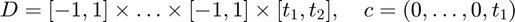
where [t_1,t_2] is the time domain, i.e., the domain of the variable t with respect to which the integration is performed from t_1 to t_2.
Taylor model arithmetic
Similar to affine arithmetic, a strength of Taylor model arithmetic lies in respecting inner dependencies of the input data. For simplicity, let us consider the Taylor model y from above with zero error interval
y = taylormodelinit(c,D,order,M,p);
and its true range
R = infsup(-3,5)
Then,
a = y-y b = R-R
shows that the Taylor model result a = 0 is mathematically exact, while the intval result b = [-8,8] is due to ignoring data dependencies in the expression R-R by ordinary interval arithmetic. For the trivial case of a single interval, the result of affine arithmetic is zero, the same as the Taylor model result:
R_ = affari(R) b_ = R_ - R_
Let us now consider a second Taylor model z with polynomial part q := 3 - x_1^2*x_2^3:
q = [3;-1]; % polynomial coefficients N = [0 0; % polynomial exponents 2 3]; z = taylormodelinit(c,D,order,N,q);
Clearly, p+q = 5 + x_1 - x_2 + 2*x_1^2*x_2^3 is the polynomial part of r_plus := y+z:
r_plus = y+z
Note that no rounding errors occur in the summation of the polynomial coefficients wherefore the error interval of the Taylor model result r_plus stays zero.
At first glance surprising, the polynomial part of the product r_mult := y*z is not
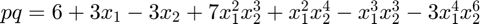
but only the part of order up to the degree bound 7. This is
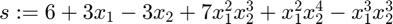
The image [-3,0] = midrad(-1.5,1.5) of the truncated term -3*x_1^4*x_2^6 of degree 10 moves to the error interval of r_mult.
r_mult = y*z
Having summation and multiplication at hand, unary standard functions like exp, log, sin, cos, etc. can be defined for Taylor models through finite Taylor series expansions of those functions and bounding the remainder term in a verified manner. This procedure coined the name "Taylor models". For details we refer to the references [E] and [M] below.
As stated in Section "Definition of Taylor models", the main advantage of Taylor models is that they allow to enclose multidimensional shapes with curved, not necessarily convex boundaries without too much overestimation. This is not possible for interval arithmetic which only supplies enclosures in axis parallel boxes. It is also not possible for affine arithmetic which only provides convex polytopes as enclosure sets.
As an example let us consider the square B := [-r,r] x [-r,r] with r := 0.1, which shall be mapped iteratively by the function
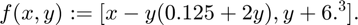
The following program executes four such iterations with
- interval arithmetic (blue plot)
- affine arithmetic (green plot)
- Taylor model arithmetic (black plot)
For each iteration the curved red line shows the approximate true boundary of the transformed box B, i.e., the boundary of the sets f(B),f(f(B)), f(f(f(B))), and f(f(f(f(B)))), respectively. The four pictures clearly show that Taylor model arithmetic creates almost no overestimation compared to the rough inclusions supplied by interval arithmetic and affine arithmetic.
f = @(x,y) [ x - y.*(0.125 + 2*y) , y + 6*x.^3 ]; r = 0.1; B = midrad([0;0],r); % interval representation of B := [-r,r]x[-r,r] a = (-1:0.01:1)'; e = ones(length(a),1); b = r*[a e;e -a;-a -e;-e a]; % discretized boundary of B y_fl = b; y_iv = B; y_af = affari(B); % affine arithmetic representation of B y_tm = taylormodelinit({c;c},{D;D},[18;18],{[1 0];[0 1]},{r;r}); % Taylor model representation of B (order := 18) close all for i = 1:4 subplot(2,2,i) title(['iteration ', num2str(i)]) hold on y_iv = f(y_iv(1),y_iv(2)); % Evaluate f in interval arithmetic plotintval(y_iv','b'); % ... and plot the enclosure in blue. y_af = f(y_af(1),y_af(2)); % Evaluate f in affine arithmetic plotaffari(y_af','g'); % ... and plot the enclosure in green. y_tm = f(y_tm(1),y_tm(2)); % Evaluate f in Taylor model arithmetic plottaylormodel(y_tm,[],[],100) % ... and plot the enclosure in black. y_fl = f(y_fl(:,1),y_fl(:,2)); % Compute approximate boundary of f(f(...(B))) plot(y_fl(:,1),y_fl(:,2),'r'); % ... and plot it as red line. end set(gcf, 'Units', 'Normalized', 'OuterPosition', [0 0 0.5 0.8]);
verifyode - Syntax
Calling verifyode is similar to calling a MATLAB ODE solver like ode45:
[T,Y] = verifyode(odefun,tspan,y0) [T,Y] = verifyode(odefun,tspan,y0,options) [T,Y,Yr] = verifyode(odefun,tspan,y0,options)
Description
[T,Y] = verifyode(odefun,tspan,y0), where tspan = [t0 tf], integrates the system of differential equations y' = f(t,y) from t0 to tf with initial conditions y0. Each row of the Taylor model array Y represents an inclusion of the solution y on a time interval of the time grid T. The time grid T is simply a floating-point column vector of time grid points T(i) where T(1) = t0 and T(m) = tf, m := length(T). Precisely, for t in [T(j),T(j+1)] the solution y(t) at time t is contained in the set
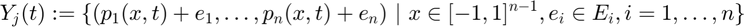
where n is the dimension of the ODE, p_i is the polynomial part and E_i is the error interval of the Taylor model Y(j,i), j = 1,..,m-1, i=1,...,n.
The initial condition y0 may be an interval vector. This means that the computed inclusion Y contains the true solution of the differential equation for any initial values y_i(t0) in the interval y0(i), i = 1,...,n. This allows to model uncertainties in the initial values.
As demonstrated in the previous section, Taylor models are especially well suited for enclosing multidimensional shapes with curved boundary. Such shapes occur naturally in flows of nonlinear ODE systems (n >= 2) with interval initial conditions, where at time s the initial interval box y0 is transformed to the set
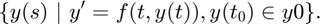
Conversely, for solving ODE systems with point initial conditions, other verified ODE solvers like awa might be tried first which, in general, run much faster since high order Taylor model arithmetic is expensive.
Concluding this section, we remark that the right-hand side f(t,y) of the ODE must be implemented by the user. It is passed to verifyode by a corresponding function handle odefun, see the detailed description in Section "Input Arguments".
Introductory example
Solve the ODE
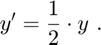
Use a time interval [0,2] and the initial condition y0 = 1.
tspan = [0,2];
y0 = 1;
lambda = 0.5;
odefun = @(t,y,i) lambda.*y; % odefun must accept three inputs (t,y,i) even though t and i are not used.
[T,Y] = verifyode(odefun,tspan,y0);
The function verifyode_disp can be used to display enclosures at all time grid points:
format long e verifyode_disp(T,Y,[],y0);
For example, at the final grid point t = 2 the solution y(t) = y(2) = exp(1) is contained in the interval
[y] = [ 2.718281828459001e+000, 2.718281828459091e+000]
with diameter d([y]) = 8.84e-14. For comparison we may use the intval exponential directly:
exp1 = exp(intval(1))
The function verifyode_disp can also compute and display verified enclosures at arbitrary (floating-point) time points in [0,2]. For example,
x = 2*rand [t,y] = verifyode_disp(T,Y,[],y0,x); in(exp(intval(x)/2),y)
returns and displays an interval enclosure at t = x which is not a grid point in T. [The formatted display is suppressed by calling [t,y] = verifyode_disp(T,Y,[],y0,1,false).]
Example II - Lotka-Volterra equations, a two-dimensional ODE system
The well-known Lotka-Volterra equations read:
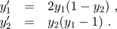
The function file lotka_volterra.m implements these equations.
function dydt = lotka_volterra(t,y,i) if nargin == 2 || isempty(i) dydt = [2.*y(1).*(1-y(2)); % y1' = 2*y1*(1-y2) (y(1)-1).*y(2)]; % y2' = (y1-1)*y2 else switch i case 1 % Compute only first component. dydt = 2.*y(1).*(1-y(2)); case 2 % Compute only second component. dydt = (y(1)-1).*y(2); end end
The third input argument i allows to compute specific function components separately. This was invented to improve the performance of verifyode since Taylor model arithmetic is expensive.
The ODE shall be solved on the time interval [0,5.5] (which covers a full predator-prey cycle modeled by the system) with interval initial values y_0 = [0.95,1.05]x[2.95,3.05], see [MB], and [E], Chapter 5. The resulting output is a floating-point column vector of time points T and a solution Taylor model array Y. Each row j in Y corresponds to a time interval [T(j),T(j+1)]. The first column of Y contains Taylor models for y_1, and the second column for y_2. We use the function verifyodeset to set some options for verifyode. This is similar to MATLAB's function odeset. In particular preconditioning is switched on which generates the third output argument Yr (right Taylor models). See the detailed description of possible options in Section "Input Arguments".
t0 = 0; % start time tf = 5.5; % end time y0 = midrad([1;3],0.05); % interval initial conditions options = verifyodeset('order',18,'shrinkwrap',false,'precondition',1,'blunting',false,... 'h0',0.03,'h_min',0.003,'loc_err_tol',1E-11,'sparsity_tol',1E-20); tic [T,Y,Yr] = verifyode(@lotka_volterra,[t0,tf],y0,options); toc
The enclosures for y_1 and y_2 are plotted against t by using INTLAB's plot function. For comparison, the system is also solved with ode45 for initial conditions y0.inf = [1.95;2.95] and y0.sup = [2.05;3.05]. First, ode45 uses its default options. The two results are stored in [t_inf,v_inf] and [t_sup,v_sup]. Second, ode45 is executed with higher accuracy and the results are stored in [s_inf,w_inf] and [s_sup,w_sup]. The inclusion computed by verifyode and the ode45 approximations are displayed in one plot.
format short; verifyode_disp(T,Y,Yr,y0,tf); % Display enclosure of y at t = tf = 5.5. tt = linspace(t0,tf,300); % fine grid for plotting [t,y] = verifyode_disp(T,Y,Yr,y0,tt,false); % Compute interval enclosures at fine grid. figure; plot(t,y); % Plot enclosures for y_1 and y_2. title('Solution of Lotka-Volterra Equations with verifyode'); xlabel('Time t'); ylabel('Solution y'); hold on; [t_inf,v_inf] = ode45(@lotka_volterra,[t0,tf],y0.inf); % Execute ode45 with initial condition y0.inf = [1.95;2.95] [t_sup,v_sup] = ode45(@lotka_volterra,[t0,tf],y0.sup); % Execute ode45 with initial condition y0.sup = [2.05;3.05] plot(t_inf,v_inf,'.-b',t_sup,v_sup,'.-b'); % Plot ode45 results as blue lines where grid points are marked as dots. options = odeset('RelTol',1e-12,'AbsTol',[1e-12 1e-12]); % Set options for higher accuracy of ode45. [s_inf,w_inf] = ode45(@lotka_volterra,[t0,tf],y0.inf,options); % Execute ode45 again with higher accuracy. [s_sup,w_sup] = ode45(@lotka_volterra,[t0,tf],y0.sup,options); plot(s_inf,w_inf,'g',s_sup,w_sup,'g'); % Plot new ode45 results as green lines.
Zooming into the plot of y_2 at time t = 1.486 shows that the first ode45 approximation v (blue line) is not contained in the verifyode enclosure (red tube), thus cannot be correct. Contrary, the ode45 approximation w computed with higher accuracy (green line) is contained in that tube.
axis([1.4855 1.4865 0.9116 0.9135]); % Zoom into the plot for y_2 at t = 1.486.
Finally, we remark that awa cannot integrate this ODE upto tf = 5.5. The reason is that the initial condition box y0 = midrad([1;3],0.05) is quite large and the nonlinear Lotka-Voltera equations transform it through time to shapes with curved boundaries which are much overestimated by awa's convex polytopes enclosures.
Example III - The Lorenz system
Consider the Lorenz system
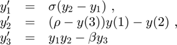
for
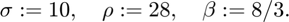
It is implemented by
function dydt = lorenz(t,y,i) sigma = 10; rho = 28; if nargin == 2 || isempty(i) || i == 3 if isfloat(y) beta = 8/3; else beta = iv2intval(iv_rdivide(8,3)); end end if nargin == 2 || isempty(i) dydt = y; dydt(1) = sigma.*(y(2)-y(1)); dydt(2) = (rho-y(3)).*y(1)-y(2); dydt(3) = y(1).*y(2)-beta.*y(3); else switch i case 1 dydt = sigma.*(y(2)-y(1)); case 2 dydt = (rho-y(3)).*y(1)-y(2); case 3 dydt = y(1).*y(2)-beta.*y(3); end end
The system shall be solved for interval initial conditions
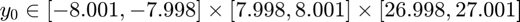
and integration period [t0,tf] = [0 3], see [E], Chapter 5. The following program computes two verified solutions with verifyode. The first uses QR preconditioning, the second uses shrink wrapping. A third enclosure is computed with awa and evaluation method 4. All three enclosures are displayed for the final time point tf = 3. Furthermore, MATLAB's non-verified solver ode45 is used to compute an approximate solution of high accuracy where the midpoint of y0 is taken as initial condition.
t0 = 0; tf = 3; % verified enclosure of initial values y0 = intval(' [-8.001,-7.998] [7.998,8.001] [26.998,27.001] '); y0_mid = mid(y0); % Set options for verifyode with QR preconditioning. options_p = verifyodeset('order',10,'shrinkwrap',0,'precondition',1,'blunting',0,... 'h0',0.05,'h_min',1e-3,'loc_err_tol',1e-11,'sparsity_tol',1e-20); % Set options for verifyode with shrink wrapping. options_s = verifyodeset('order',10,'shrinkwrap',1,'precondition',0,'blunting',0,... 'h0',0.05,'h_min',1e-3,'loc_err_tol',1e-11,'sparsity_tol',1e-20); % Set options for awa. options_awa = awaset('order',10,'h0',0.1,'h_min',1e-4,'EvalMeth',4,'AbsTol',1e-16,'RelTol',1e-16); % Set options for ode45 options_ode45 = odeset('RelTol',1e-13,'AbsTol',[1e-13 1e-13 1e-13]); progress(inf); % Do not display a progress window. tic [Tp,Yp,Yrp] = verifyode(@lorenz,[t0,tf],y0,options_p); % verifyode with QR preconditioning run_time_verifyode_p = toc; tic [Ts,Ys] = verifyode(@lorenz,[t0,tf],y0,options_s); % verifyode with shrink wrapping run_time_verifyode_s = toc; tic [t_awa,y_awa] = awa(@lorenz,@lorenz_jac,[t0,tf],y0,options_awa); % awa run_time_awa = toc; tic [t_ode45,y_ode45] = ode45(@lorenz,[t0,tf],y0_mid,options_ode45); % ode45 run_time_ode45 = toc; format long e % Display verifyode and awa enclosures and ode45 result at tf = 3. [~,yp_end] = verifyode_disp(Tp,Yp,Yrp,y0,tf); % ... verifyode with QR preconditioning [~,ys_end] = verifyode_disp(Ts,Ys,[],y0,tf); % ... verifyode with shrink wrapping [~,y_awa_end] = awa_disp(t_awa,y_awa,[],tf); % ... awa format infsup; y_ode45_end = y_ode45(end,:) % ... ode45 % Display runtimes. disp(['runtime verifyode with QR preconditioning: ',num2str(run_time_verifyode_p,'%.2f')]); disp(['runtime verifyode with shrink wrapping : ',num2str(run_time_verifyode_s,'%.2f')]); disp(['runtime awa with evaluation method 4 : ',num2str(run_time_awa,'%.2f')]); disp(['runtime ode45 : ',num2str(run_time_ode45,'%.2f')]); % Check if ode45 result is contained in the verifyode and awa enclosures. all(in(y_ode45_end,yp_end)) && ... all(in(y_ode45_end,ys_end)) && ... all(in(y_ode45_end,y_awa_end))
The shortest runtime and the tightest enclosure is computed by verifyode with QR preconditioning. The enclosures of y_1 and y_2 computed with verifyode and shrink wrapping are better than those obtained with awa, whereas y_3 is better enclosed by awa.
The following program uses the function plottaylormodel_1d to plot enclosures that are overall verified, i.e., zooming in at any position always shows red verified lower and green verified upper bounds of the solution.
figure title('Solution of Lorenz system with verifyode'); hold on % The constants kmax1, kmax2, kmax3 are optional subdivision numbers for % Taylor model domains, see the documentation of function plottaylormodel_1d. kmax1 = 2; kmax2 = 2; kmax3 = 2; plottaylormodel_1d(Ys(:,1),[],kmax1,kmax2,kmax3); % enclosure for y1 plottaylormodel_1d(Ys(:,2),[],kmax1,kmax2,kmax3); % enclosure for y2 plottaylormodel_1d(Ys(:,3),[],kmax1,kmax2,kmax3); % enclosure for y3 t = t_ode45; y = y_ode45; fig = plot(t,y(:,1),'k',t,y(:,2),'b',t,y(:,3),'c'); % approximate ode45 results xlabel('Time t'); ylabel('Solution y'); legend(fig,'y_1','y_2','y_3');
Zooming into the plot for y_2 (blue line) at t = 2.2 shows the verified lower and upper bounds plotted in red and green, respectively:
axis([2.11 2.25 -2.95 -2.45]); % Zoom in on the plot for y_2 at t = 2.2.
If the enclosure obtained by verifyode with QR preconditioning shall be ploted in the same way, then left and right Taylor models Yp and Yrp must be concatenated first. This is done by the function tie. We only want to look at the second component y_2. Its left Taylor models are Yp(:,2) which must be concatenated with the right Taylor models Yrp:
Z = tie(Yp(:,2),Yrp);
The following program plots the Taylor model Z with red lower and green upper bound, and the awa enclosure as a yellow tube. Moreover, two new ode45 solutions are computed, one for initial condition y0.inf = [-8.001,7.998,26.998] (cyan dots) and one for initial condition y0.sup = [-7.998,8.001,27.001] (blue dots).
figure plot(t_awa,y_awa(:,2),'y'); % awa enclosure (yellow tube) hold on title('Solution y_2 of Lorenz system'); xlabel('Time t'); ylabel('Solution y_2'); plottaylormodel_1d(Z,[],3,3,3); % verifyode enclosure for y2 (red and green lines) [t_inf,y_inf] = ode45(@lorenz,Tp,y0.inf,options_ode45); [t_sup,y_sup] = ode45(@lorenz,Tp,y0.sup,options_ode45); % ode45 for y0.sup plot(t_inf,y_inf(:,2),'.c'); % ode45 result for y0.inf (cyan dots) plot(t_inf,y_sup(:,2),'.b'); % ode45 result for y0.sup (blue dots) axis([2.11 2.25 -2.92 -2.58]); % Zoom in on the plot at t = 2.2.
Input Arguments
odefun : This is, as for all MATLAB ode-solvers like ode45, a function handle for the right-hand side f of the ODE y' = f(t,y). Different to MATLAB's ODE solvers, f must accept an additional, optional integer input argument i, that is:
dydt = odefun(t,y,i)
for a scalar t, a column vector y, and a positive integer i which is simply a function index ranging from one to the dimension of the ODE system. If i is empty or if it is not passed to odefun, then odefun must return a column vector dydt that corresponds to f(t,y). If i is specified, then odefun shall only compute and return the i-th component f_i(t,y) of f(t,y). In case of a one-dimensional system there is no difference between calling odefun(t,y) and odefun(t,y,1).
We emphasize that odefun must accept all three input arguments, t, y, and i, even if some of the arguments are not used in the function. For example, to solve the one-dimensional system y' = 5y-3 use the function:
function dydt = odefun(t,y,i)
dydt = 5.*y-3;
For a higher dimensional system, the output of odefun(t,y) is a vector. Each element in the vector is the solution to one equation. For example, to solve
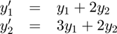
use the function:
function dydt = odefun(t,y,i) if nargin == 2 || isempty(i)precond dydt = y; % cheap initialization as column vector dydt(1) = y(1) + 2.*y(2); dydt(2) = 3.*y(1) + 2.*y(2); else switch i case 1 dydt = y(1) + 2.*y(2); % Compute only first component. case 2 dydt = 3.*y(1) + 2.*y(2); % Compute only second component. end end
or alternatively:
function dydt = odefun(t,y,i) if nargin == 2 || isempty(i) dydt = [ y(1)+2.*y(2) ; 3.*y(1)+2.*y(2) ]; else ... end
A function call odefun(t,y,1) only computes and returns the first equation dydt = y(1) + 2.*y(2). This possibility of equation-wise access to the ODE system allows to improve the performance of verifyode significantly.
The implementation of odefun may contain INTLAB interval operations and functions. Consider, for example, f(t,y) = cos(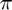*y) + t. Then, since is not a floating-point number, odefun may be implemented rigorously as follows:
odefun = @(t,y,i) cos(intval('pi').*y) + t;
There is one special syntax rule that must be kept: If a constant value, either a floating-point number or an interval, shall be assigned to one of the components of dydt, then a typecasting using the function typeadjust must be done explicitly.
For example, the ODE y' = 1 must be implemented as
function dydt = odefun(t,y,i)
dydt = typeadjust(1,y);
tspan = [t0,tf] specifies the integration interval. As stated, it must be a two element vector [t0,tf] with t0 > tf. (If integration in negative direction is wanted, i.e., t0 < tf, then odefun must be transformed accordingly.) Note that t0 and tf must be floating-point numbers. In general this is no severe restriction and is either fulfilled anyway, or can easily be achieved by a shift and/or scaling of the time variable in the ODE function. This may lead to interval parameters in the ODE function.
MATLAB's ODE solvers like ode45 allow tspan = [t0,t1,t2,...,tf] to contain more than two elements, and in this case they return approximate values for the solution at these points. This is not allowed for verifyode. If verified enclosures of the solution at specific intermediate points [t1,t2,...] are sought, then this can be done a posteriori, see Example 1 and Section "Display results".
y0 : This is the initial value vector, i.e., y(t0) = y0, which may be a floating-point or interval vector.
options : option structure with components that are parameters of verifyode. The function verifyodeset can be used to create options similar to the MATLAB function odeset.
Example: options = verifyodeset('order',20, 'h0',1e-1, 'h_min',1e-3, 'loc_err_tol',1e-11);
This bounds the degree of Taylor models by 20, sets the initial and minimum step sizes to (approximately) 0.1 and 0.001, respectively, and limits the local error tolerance used for the automatic step size control to 1e-11.
The following options can be set:
- order: bound of Taylor model degrees, see the first Section "Definition of Taylor models". The default is order = 12.
- h0: initial step size. If h0 = 0 (default), then verifyode chooses the initial step size automatically. An experienced user may specify a reasonable nonzero value.
- h_min: minimum step size. The default is h_min = 1e-4. Again, an experienced user may specify a reasonable nonzero value less than h0.
- loc_err_tol: tolerance for the local error used in the automatic step size control. The default is loc_err_tol = 1e-10.
- sparsity_tol: threshold amount for coefficients c of the polynomial part of a Taylor model. If |c| < sparsity_tol, then the coefficient is removed from the polynomial and the (small) error caused by this is transferred to the error interval of the Taylor model. See the first Section "Definition of Taylor models" for the definition of the polynomial part and the error interval of a Taylor model. The default is sparsity_tol = 1E-20.
- shrinkwrap: flag for "shrink wrapping", 0: off, 1: on (default). See reference [Bue] for details on shrink wrapping.
- precondition: preconditioning of Taylor models, 0: off (default), 1: QR preconditioning, 2: parallelepiped preconditioning. Especially QR preconditioning is a stable method with good performance that is well suited for long-term integration. See references [MB] and [NJN] for details on preconditioning.
- blunting: blunting of ill-conditioned matrices during shrink wrapping or parallelepiped preconditioning, 0: off (default), 1: on. See references [MB] and [NJN2] for details on blunting.
- bounder: method for bounding the image of the polynomial part of a Taylor model, 'NAIVE': use interval arithmetic directly (default), 'LDB' : Linear Dominated Bounder. See references [M] and [N] for details on the LDB-method.
Output Arguments
- T: Array of time grid points with T(1) = t0 and T(m) = tf, where tspan = [t0,tf] is the integration interval, and m:= length(T).
- Y: Taylor model enclosure of the solution. Each row of the Taylor model array Y represents an inclusion of the solution y on a time interval of the time grid T. Precisely, for t in [T(j),T(j+1)] the solution y(t) at time t is contained in the set
where n is the dimension of the ODE, p_i is the polynomial part and E_i is the error interval of the Taylor model Y(j,i), j = 1,..,m-1, i=1,...,n.
If preconditioning is switched on, see the description of the input argument "option", then Y only contains the so-called (time-dependent) left Taylor models. The corresponding (time-independent) right Taylor models are returned in the third output argument Yr.
- Yr: For fixed time step j, the yl_i := Y(j,i), i=1,...,n, are the left (time-dependent) Taylor models for t in [T(j),T(j+1)]. The corresponding (time-independent) right Taylor models are yr_i := Yr(j,i), i=1,...,n. The ODE-flow on [T(j),T(j+1)] is given by the concatenation of left and right Taylor models:
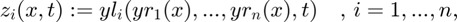
where x = (x_1,...,x_n) \in [-1,1]^n are the spacelike variables. For technical reasons of postprocessing, left and right Taylor models are returned separately by verifyode if preconditioning is switched on. If preconditioning is switched off, then Yr is empty.
Display results
Call
[t,z] = verifyode_disp(T,Y,Yr,y0,tt);
to compute and display verified interval enclosures z of the solution y at arbitrarily chosen times tt in [t0,tf], see the examples. The input parameters T,Y,Yr are the output arguments of verifyode which can be directly passed to verifyode_disp. The fourth input argument y0 is the initial condition, and the fifth optional input argument tt is a floating-point vector of time points in [t0,tf] at which the enclosures shall be computed. If tt is not specified, then tt = T is taken by default.
The output argument t is tt sorted in ascending order and returned as a column vector. Each row j of the interval array z corresponds to an enclosure of the solution at time t(j), that is, y_i(t(j)) is contained in z(j,i), j = 1,...,m, i = 1,...,n , where m := length(t) and n is the dimension of the ODE system. In other words, column z(:,i) contains the enclosures of component y_i at all time points t, i = 1,...,n. The call [t,z] = verifyode_disp(T,Y,Yr,y0,tt,false); suppresses displaying the result.
References
[E] I. Eble, "Ueber Taylor-Modelle", Dissertation at Karlsruhe Institute of Technology, 2007 (written in German),
Riot, C++-implementation, http://www.math.kit.edu/ianm1/~ingo.eble/de
[M] K. Makino, "Rigorous analysis of nonlinear motion in particle accelerators",
Dissertation at Michigan State University, 1998
[MB] K. Makino and M. Berz, "Suppression of the wrapping effect by Taylor model - based validated integrators",
MSU HEP Report 40910, 2003
[NJN] M. Neher, K.R. Jackson, N.S. Nedialkov, "On Taylor model based integration of ODEs",
SIAM J. Numer. Anal. 45(1), pp. 236-262, 2007
[NJN2] M. Neher, K.R. Jackson, N.S. Nedialkov, "On the Blunting Method in Verified Integration of ODEs",
Reliable Computing 23, pp. 15-34, 2016
[N] A. Neumaier, "Taylor Forms -- Use and Limits", Reliable Computing 9, pp. 43-79, 2003
[Bue] F. Buenger, "Shrink wrapping for Taylor models revisited", Numerical Algorithms 78(4), pp. 1001-1017, 2018Enjoy INTLAB
The Taylor model toolbox was written by Florian Buenger, Institute for Reliable Computing, Hamburg University of Technology.
INTLAB was designed and written by S.M. Rump, head of the Institute for Reliable Computing, Hamburg University of Technology. Suggestions are always welcome to rump (at) tuhh.de